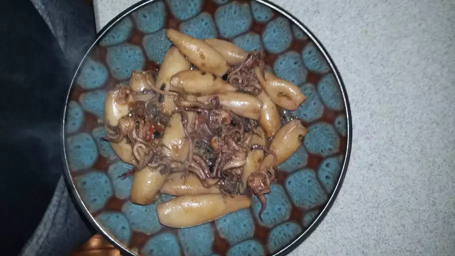

Adobong Pusit

Description
Adobong pusit is a Filipino squid recipe that tastes best if you use fresh, smaller squid. Squid is simmered with onion, garlic, tomato, vinegar, and soy sauce for a tasty meal.
Ingredients
- 2 1/4 pounds squid, cleaned
- 1/2 cup white vinegar
- 1/2 cup water
- salt and ground black pepper to taste
- 2 tablespoons olive oil
- 1 small onion, minced
- 2 cloves garlic, minced
- 1 tomato, chopped
- 1 tablespoon soy sauce
Steps
- Combine squid, vinegar, and water in a small pot over medium heat; season with salt and pepper. Simmer for 10 minutes.
- Meanwhile, heat olive oil in a saucepan over medium heat; cook and stir onion and garlic in hot oil until softened, 5 to 7 minutes. Stir in tomato and soy sauce.
- Pour squid mixture into tomato mixture and bring to a simmer; cook for 20 minutes.